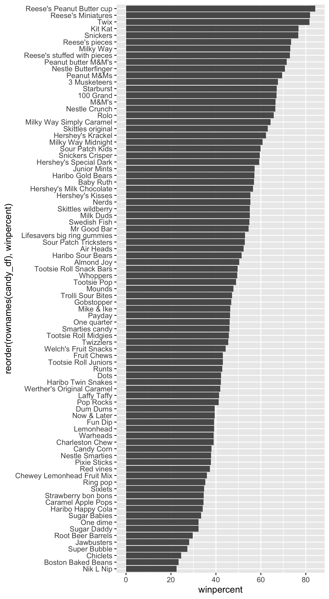

Import Data
<- read.csv ("candy-data.txt" , row.names= 1 )head (candy_df)
chocolate fruity caramel peanutyalmondy nougat crispedricewafer
100 Grand 1 0 1 0 0 1
3 Musketeers 1 0 0 0 1 0
One dime 0 0 0 0 0 0
One quarter 0 0 0 0 0 0
Air Heads 0 1 0 0 0 0
Almond Joy 1 0 0 1 0 0
hard bar pluribus sugarpercent pricepercent winpercent
100 Grand 0 1 0 0.732 0.860 66.97173
3 Musketeers 0 1 0 0.604 0.511 67.60294
One dime 0 0 0 0.011 0.116 32.26109
One quarter 0 0 0 0.011 0.511 46.11650
Air Heads 0 0 0 0.906 0.511 52.34146
Almond Joy 0 1 0 0.465 0.767 50.34755
Data Exploration
Q.1 How many different candies are in the dataset?
There are 85 candies in this dataset.
Q.2 How many fruity candies are in the dataset?
There are 38 fruity candies in the dataset.
My favorite candy is Kit Kat.
chocolate fruity caramel peanutyalmondy nougat crispedricewafer hard
Kit Kat 1 0 0 0 0 1 0
bar pluribus sugarpercent pricepercent winpercent
Kit Kat 1 0 0.313 0.511 76.7686
Q.3/Q.4 What is your favorite candy and what is its winpercent? What is Kit Kat’s winpercent?
Kit Kat has a winpercent of 76.7686
Q.5 What is “Tootsie Roll Snack Bars” winpercent?
Tootsie Roll Snack Bars have a winpercent of 49.653503
Data summary
Name
candy_df
Number of rows
85
Number of columns
12
_______________________
Column type frequency:
numeric
12
________________________
Group variables
None
Variable type: numeric
chocolate
0
1
0.44
0.50
0.00
0.00
0.00
1.00
1.00
▇▁▁▁▆
fruity
0
1
0.45
0.50
0.00
0.00
0.00
1.00
1.00
▇▁▁▁▆
caramel
0
1
0.16
0.37
0.00
0.00
0.00
0.00
1.00
▇▁▁▁▂
peanutyalmondy
0
1
0.16
0.37
0.00
0.00
0.00
0.00
1.00
▇▁▁▁▂
nougat
0
1
0.08
0.28
0.00
0.00
0.00
0.00
1.00
▇▁▁▁▁
crispedricewafer
0
1
0.08
0.28
0.00
0.00
0.00
0.00
1.00
▇▁▁▁▁
hard
0
1
0.18
0.38
0.00
0.00
0.00
0.00
1.00
▇▁▁▁▂
bar
0
1
0.25
0.43
0.00
0.00
0.00
0.00
1.00
▇▁▁▁▂
pluribus
0
1
0.52
0.50
0.00
0.00
1.00
1.00
1.00
▇▁▁▁▇
sugarpercent
0
1
0.48
0.28
0.01
0.22
0.47
0.73
0.99
▇▇▇▇▆
pricepercent
0
1
0.47
0.29
0.01
0.26
0.47
0.65
0.98
▇▇▇▇▆
winpercent
0
1
50.32
14.71
22.45
39.14
47.83
59.86
84.18
▃▇▆▅▂
Q.6 Is there any variable/column that looks to be on a different scale to the majority of the other columns in the dataset?
The sugar percent, price percent, and winpercent seem to be on a different scale
Q.7 What do you think a zero and one represent for the candy$chocolate column?
Zeros represent the candy is not chocolate based and 1 means it is.
Q.8 Plot a histogram of winpercent values
library (ggplot2)ggplot (candy_df) + aes (x= winpercent) + geom_histogram (bins= 7 )
Q.9 Is the distribution of winpercent values symmetrical?
The distribution is not symmetrical
Q.10 Is the center above or below 50%?
Below 50%
Q.11 On average is chocolate candy higher or lower ranked than fruit candy?
<- mean (candy_df[candy_df$ chocolate == 1 ,]$ winpercent)<- mean (candy_df[candy_df$ fruity == 1 ,]$ winpercent)
Chocolate is ranked higher with an average winpercent 60.9215294 while fruity candies are only ranked with an average winpercent 44.1197414
Q.12 Is this difference statistically significant
<- candy_df[candy_df$ chocolate == 1 ,]<- candy_df[candy_df$ fruity == 1 ,]<- t.test (chocolate_df$ winpercent, fruity_df$ winpercent)
Welch Two Sample t-test
data: chocolate_df$winpercent and fruity_df$winpercent
t = 6.2582, df = 68.882, p-value = 2.871e-08
alternative hypothesis: true difference in means is not equal to 0
95 percent confidence interval:
11.44563 22.15795
sample estimates:
mean of x mean of y
60.92153 44.11974
Since the t-test had a p-value 2.8713778^{-8} the difference is statistically significant.
Q.13 What are the five least liked candy types in this set?
<- candy_df[order (candy_df$ winpercent), ]row.names (head (candy_df, n= 5 ))
[1] "Nik L Nip" "Boston Baked Beans" "Chiclets"
[4] "Super Bubble" "Jawbusters"
Q.14 What are the top 5 all time favorite candy types out of this set?
row.names (tail (candy_df, n= 5 ))
[1] "Snickers" "Kit Kat"
[3] "Twix" "Reese's Miniatures"
[5] "Reese's Peanut Butter cup"
Q.15 Make a first barplot of candy ranking based on winpercent values.
ggplot (candy_df) + aes (winpercent, rownames (candy_df)) + geom_col ()
Q.16 This is quite ugly, use the reorder() function to get the bars sorted by winpercent?
ggplot (candy_df) + aes (winpercent, reorder (rownames (candy_df), winpercent)) + geom_col ()
Adjust figure height:
ggsave ("mybarplot.png" , height= 10 )

Add some color:
<- rep ("green3" , nrow (candy_df))as.logical (candy_df$ chocolate)] = "chocolate4" as.logical (candy_df$ fruity)] = "maroon" as.logical (candy_df$ caramel)] = "gold2" ggplot (candy_df) + aes (winpercent, reorder (rownames (candy_df), winpercent)) + geom_col (fill= plot.cols)
Q.17 What is the worst ranked chocolate candy?
Sixlets are the worst ranked chocolate candy.
Q.18 What is the best ranked fruity candy?
The best ranked fruity candy is starbursts
Plot winpercent vs. pricepercent
library (ggrepel)ggplot (candy_df) + aes (winpercent, pricepercent, label= rownames (candy_df)) + geom_point (col= plot.cols) + geom_text_repel (col= plot.cols, size= 3.3 , max.overlaps = 5 )
Warning: ggrepel: 49 unlabeled data points (too many overlaps). Consider
increasing max.overlaps
Correlation
<- cor (candy_df)corrplot (cij)
PCA
<- prcomp (candy_df, scale.= T)summary (pca)
Importance of components:
PC1 PC2 PC3 PC4 PC5 PC6 PC7
Standard deviation 2.0788 1.1378 1.1092 1.07533 0.9518 0.81923 0.81530
Proportion of Variance 0.3601 0.1079 0.1025 0.09636 0.0755 0.05593 0.05539
Cumulative Proportion 0.3601 0.4680 0.5705 0.66688 0.7424 0.79830 0.85369
PC8 PC9 PC10 PC11 PC12
Standard deviation 0.74530 0.67824 0.62349 0.43974 0.39760
Proportion of Variance 0.04629 0.03833 0.03239 0.01611 0.01317
Cumulative Proportion 0.89998 0.93832 0.97071 0.98683 1.00000
Plot PC1 vs PC2
plot (pca$ x[,1 : 2 ], col= plot.cols, pch= 16 )
Use ggplot
ggplot (pca$ x) + aes (x= pca$ x[,1 ], y= pca$ x[,2 ], size= candy_df$ winpercent/ 100 ) + geom_point (col= plot.cols) + labs (title = "Halloween Candy PCA space" ) + xlab ("PC1" ) + ylab ("PC2" ) + geom_text_repel (col= plot.cols, size= 3.3 , max.overlaps= 7 , label= row.names (candy_df))
Warning: ggrepel: 43 unlabeled data points (too many overlaps). Consider
increasing max.overlaps
par (mar= c (8 ,4 ,2 ,2 ))barplot (pca$ rotation[,1 ], las= 2 , ylab= "PC1 Contribution" )